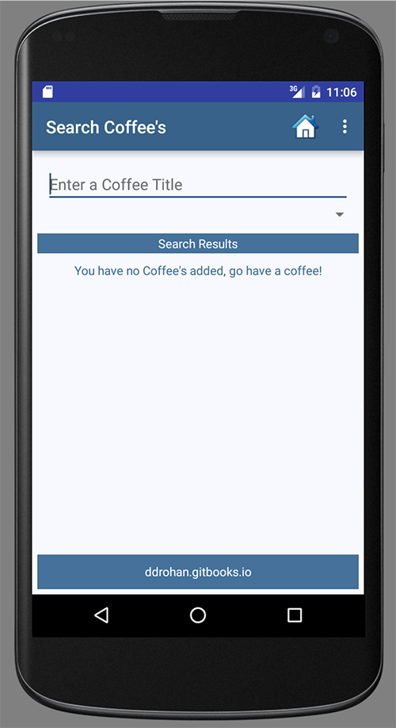
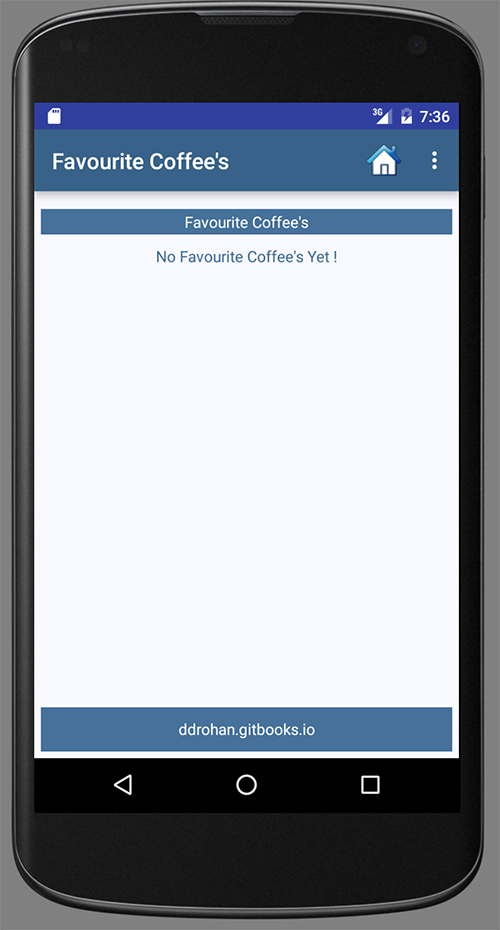

When we're finsihed this lab, we'll be able to display the users Favourite coffees and apply a filter to the list of coffees so the user can search on a coffee name or type, or both. If you've run the starter code (and it's recommended you do) you'll see that the 'Search' & 'Favourites' buttons are working, but not functioning properly - we're not seeing any refined list of coffees.
 
Furthermore, there's nothing to select from the Spinner (second screenshot above) so this lab is all about refactoring existing classes to get these features working.
It's also worth taking a look at our Home.java below just to confirm you understand how we implemented the button functionality.
The following steps will take you through completing CoffeeMate 3.0.
package ie.cm.activities;
import ie.cm.R;
import ie.cm.models.Coffee;
import android.os.Bundle;
import android.view.View;
public class Home extends Base {
@Override
public void onCreate(Bundle savedInstanceState) {
super.onCreate(savedInstanceState);
setContentView(R.layout.home);
//Comment out after first run of app
setupCoffees();
}
@Override
protected void onResume() {
super.onResume();
coffeeFragment = new CoffeeFragment();
getFragmentManager().beginTransaction()
.add(R.id.fragment_layout, coffeeFragment)
.commit();
}
public void add(View v) {
goToActivity(this,Add.class,null);
}
public void search(View v) {
goToActivity(this,Search.class,null);
}
public void favourites(View v) {
goToActivity(this,Favourites.class,null);
}
public void setupCoffees(){
coffeeList.add(new Coffee("Standard Black", "Some Shop",2.5,1.99,0));
coffeeList.add(new Coffee("Regular Joe", "Joe's Place",3.5,2.99,1));
coffeeList.add(new Coffee("Espresso", "Ardkeen Stores",4.5,1.49,1));
}
}